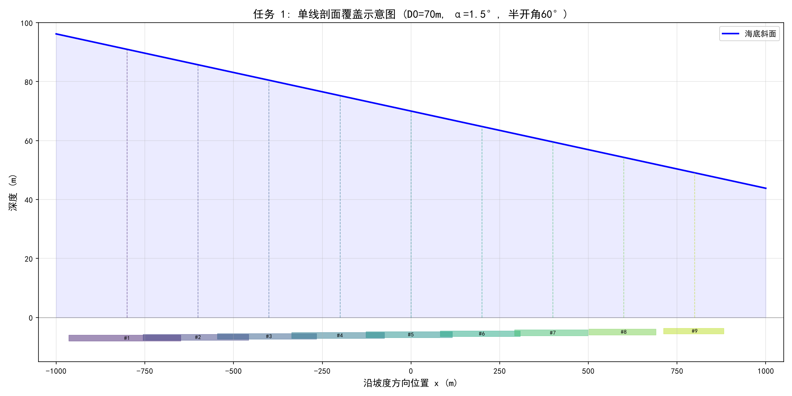
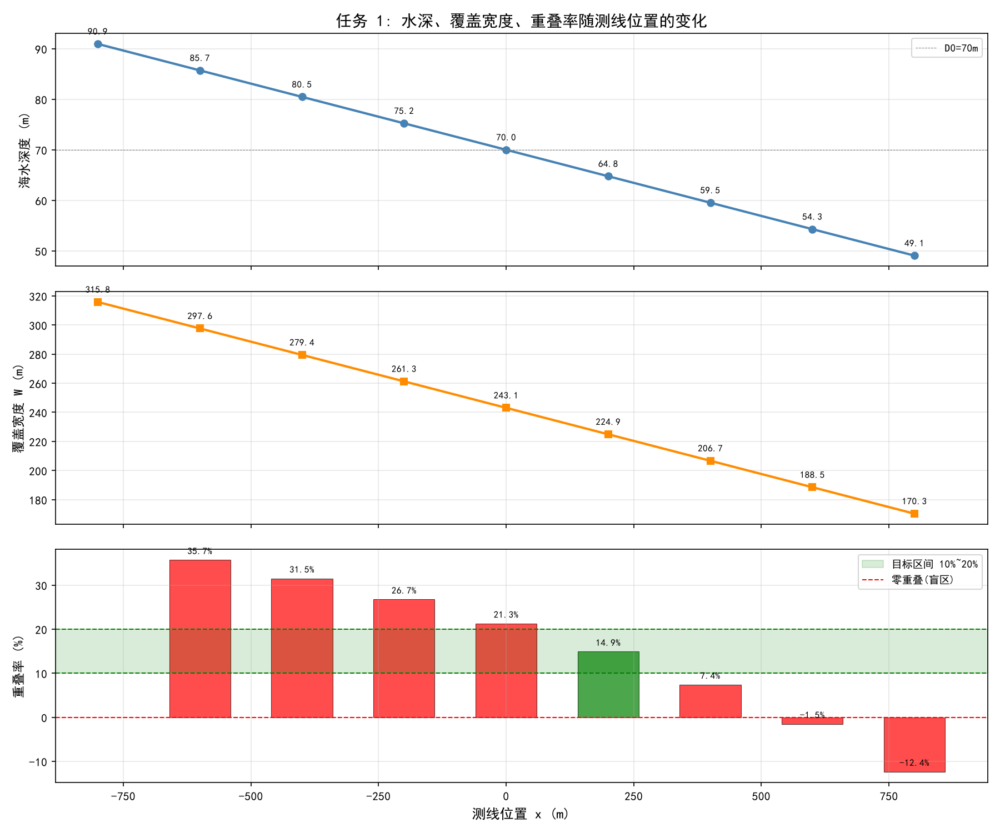
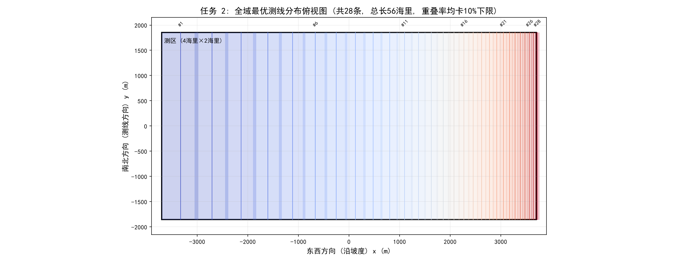
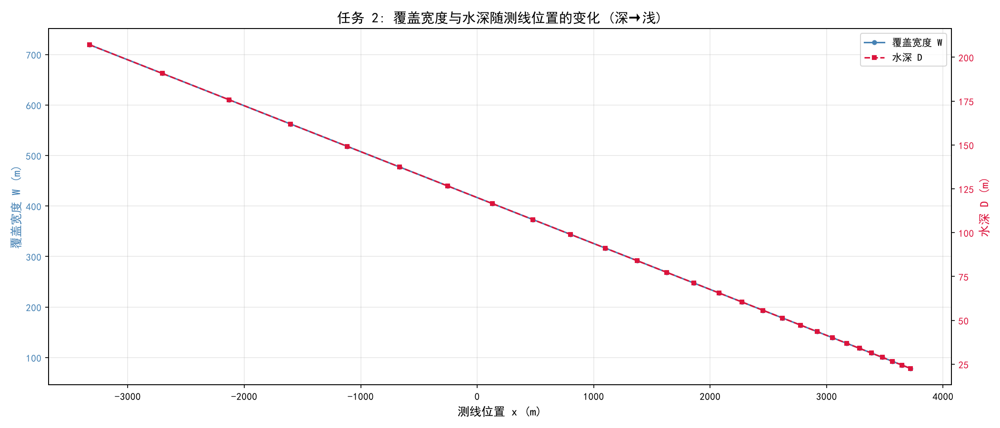
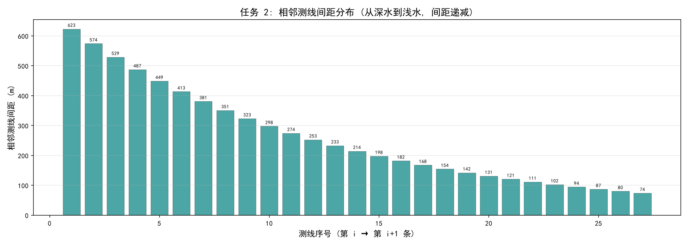

AI 初始输出：第一条测线无前一条时，重叠率显示为"-"或 -1，不够直观。
人工纠偏：修改代码，第一条显示"无（首条）"，真实负重叠率（盲区）标注"(盲区)"，区分"无前一条"和"有前一条但产生盲区"两种情况。
数学建模综合实践课程 · 课题 1
王雪丞 · 管向阳 · 许浩榆
多波束测深系统（MBES）是现代海洋测绘的核心设备。换能器以一定开角向海底发射扇形声波束，一次性获取一条带状区域的水深数据。由于海底存在坡度，水深沿坡度方向变化，导致不同位置处单条测线的覆盖宽度不同。
本课题要求在给定海域内设计平行测线方案，满足完全无死角覆盖且相邻重叠率在 10%~20% 的约束下，使总测线长度最短。具体分两个任务：
| 任务 | 参数 | 要求 |
|---|---|---|
| 任务 1：单线剖面分析 | $D_0=70$m，$\alpha=1.5°$，开角 120° | 计算 9 个等间距位置的水深、覆盖宽度、重叠率 |
| 任务 2：全域最优规划 | $D_0=120$m，$\alpha=1.5°$，测区 2×4 海里 | 贪心搜索最优测线布局，总长最短 |
以海平面待测海域中心点为原点 $(0,0)$：
海底为平坦斜坡，坡度 $\alpha$，在 $x=0$ 处水深为 $D_0$。海底斜面方程为：
测量船沿等深线方向（与坡度方向正交）匀速直线航行，每条测线对应的 $x$ 坐标固定，覆盖宽度仅由该处水深决定。
下图展示了测量船在位置 $x$ 处发射多波束的几何关系。换能器开角 120°，半开角 $\theta=60°$，左舷波束偏向深水侧，右舷波束偏向浅水侧，两条边缘波束与海底斜面的交点即为覆盖区域的左右边界。
图 1：多波束测深二维几何剖面示意。船在位置 $x$ 处，水深 $D(x)$，左右波束分别以半开角 $\theta$ 偏离竖直方向，在海底斜面上的落点 $X_L$、$X_R$ 确定了覆盖宽度 $W$。
测量船位于横坐标 $x$ 处时，其正下方海水深度为：
$x>0$（浅水方向）：$D(x)
记 $t = \tan\theta$，$a = \tan\alpha$。换能器开角 120°，半开角 $\theta=60°$。
左落点（深水侧边界）：左波束射线从 $(x,0)$ 出发，方向为左下偏 $\theta$ 角，参数方程为 $X = x - s\sin\theta$，$Y = s\cos\theta$。消去参数得射线方程：
与海底面 $Y = D_0 - Xa$ 联立求解：
右落点（浅水侧边界）：右波束射线从 $(x,0)$ 出发，方向为右下偏 $\theta$ 角。同理推导得：
两落点沿斜面的距离即为覆盖宽度 $W$。两落点均在斜面上，水平跨度为 $X_R - X_L$，沿倾角 $\alpha$ 的斜面距离需除以 $\cos\alpha$：
验证：当 $\alpha=0$（平坦海底），$W = 2D\tan\theta = 2\sqrt{3}\,D$，与几何直觉一致。
设第 $i$ 条测线位于 $x_i$，覆盖范围 $[X_L^{(i)}, X_R^{(i)}]$，第 $i+1$ 条位于 $x_{i+1} > x_i$（向浅水方向）。重叠区域宽度为 $\Delta = X_R^{(i)} - X_L^{(i+1)}$。定义重叠率为重叠宽度占后一条（较窄）测线覆盖宽度的比例：
从深水驶向浅水时，$W_{i+1} < W_i$，以较窄条带为分母更保守，有利于保障覆盖质量。
核心思想：每条测线在满足 10% 重叠率约束的前提下，尽可能远离前一条（间距最大化），从而最小化测线条数和总长度。
每次卡重叠率下限 10%，间距最大 → 条数最少 → 总长最短
卡重叠率上限 20%，间距小 → 条数多 → 总长长但冗余大
function PlanSurveyLines(x_min, x_max, target_eta):
lines = []
// Step 1: 第一条测线置于深水侧
// 令其左边界 = 测区深水边界 x_min, 反解 x1
x1 = solve X_L(x) = x_min for x
lines.append(SurveyLine(x1))
// Step 2: 贪心递推
while last_line.xRight < x_max:
prev = lines.last()
x_next = BinarySearch(prev.x, target_eta)
lines.append(SurveyLine(x_next))
return lines
function BinarySearch(prev_x, target):
lo = prev_x // 重叠率最大 (~1)
hi = X_R(prev_x) + W(prev_x) + 1000 // 重叠率为负 (盲区)
repeat 80 times:
mid = (lo + hi) / 2
eta = overlapRate(prev_x, mid)
if eta > target:
lo = mid // 重叠偏多 → 下一条往后移
else:
hi = mid // 重叠偏少 → 下一条往前移
return (lo + hi) / 2关键观察：重叠率 $\eta$ 关于下一条测线位置 $x_{\text{next}}$ 单调递减——$x_{\text{next}}$ 越大，两条线离得越远，重叠越小。
图 2：重叠率 η 关于 x_next 的单调递减关系。lo 端 η≈1（完全重叠），hi 端 η<0（盲区），中间唯一解 η=10%。
几何计算头文件 geometry.h：封装水深、边界、覆盖宽度、重叠率公式。
// 动态水深: 船在 x 处正下方水深
inline double depth(double x, const GeoParams& p) {
return p.D0 - x * std::tan(p.alpha);
}
// 左落点 (深水侧边界)
inline double leftBound(double x, const GeoParams& p) {
double d = depth(x, p), ta = std::tan(p.alpha), tt = std::tan(p.theta);
return x - d * tt / (1.0 - ta * tt);
}
// 右落点 (浅水侧边界)
inline double rightBound(double x, const GeoParams& p) {
double d = depth(x, p), ta = std::tan(p.alpha), tt = std::tan(p.theta);
return x + d * tt / (1.0 + ta * tt);
}
// 覆盖宽度: 两落点沿斜面距离
inline double coverWidth(double x, const GeoParams& p) {
return (rightBound(x, p) - leftBound(x, p)) / std::cos(p.alpha);
}
// 相邻重叠率
inline double overlapRate(double prev_x, double cur_x, const GeoParams& p) {
return (rightBound(prev_x, p) - leftBound(cur_x, p)) / coverWidth(cur_x, p);
}二分查找核心函数：
double binarySearchNext(double prev_x, double target, const GeoParams& p) {
double lo = prev_x; // η 最大
double hi = rightBound(prev_x, p)
+ coverWidth(prev_x, p) + 1000.0; // η < 0 (盲区)
for (int i = 0; i < 80; ++i) { // 80 次二分, 精度 ~1e-24
double mid = (lo + hi) * 0.5;
double eta = overlapRate(prev_x, mid, p);
if (eta > target)
lo = mid; // 重叠偏多 -> 下一条往后移
else
hi = mid; // 重叠偏少 -> 下一条往前移
}
return (lo + hi) * 0.5;
}参数：$D_0=70$m，$\alpha=1.5°$，半开角 $\theta=60°$，测线间距 200m，从 $x=-800$m 到 $x=800$m 共 9 个位置。
| 序号 | 位置 x(m) | 水深(m) | 左边界(m) | 右边界(m) | 覆盖宽度(m) | 重叠率 |
|---|---|---|---|---|---|---|
| 1 | -800 | 90.95 | -965.01 | -649.31 | 315.81 | —（首条） |
| 2 | -600 | 85.71 | -755.51 | -457.98 | 297.63 | 35.68% |
| 3 | -400 | 80.47 | -546.01 | -266.66 | 279.44 | 31.50% |
| 4 | -200 | 75.24 | -336.51 | -75.34 | 261.26 | 26.73% |
| 5 | 0 | 70.00 | -127.00 | 115.98 | 243.07 | 21.25% |
| 6 | 200 | 64.76 | 82.50 | 307.31 | 224.88 | 14.89% |
| 7 | 400 | 59.53 | 292.00 | 498.63 | 206.70 | 7.40% |
| 8 | 600 | 54.29 | 501.50 | 689.95 | 188.51 | -1.52%（盲区） |
| 9 | 800 | 49.05 | 711.00 | 881.27 | 170.33 | -12.36%（盲区） |
关键发现：固定 200m 间距在深水区重叠率过高（35%），在浅水区（$x \geq 600$m）出现盲区（重叠率为负），说明固定间距无法适应水深变化。


参数：$D_0=120$m，$\alpha=1.5°$，测区 2 海里 × 4 海里（3704m × 7408m），重叠率约束 10%~20%，贪心卡 10% 下限。
| 序号 | 位置 x(m) | 水深(m) | 覆盖宽度(m) | 重叠率 | 序号 | 位置 x(m) | 水深(m) | 覆盖宽度(m) | 重叠率 |
|---|---|---|---|---|---|---|---|---|---|
| 1 | -3328 | 207.2 | 719.3 | — | 15 | 2075 | 65.7 | 228.0 | 10.0% |
| 2 | -2705 | 190.8 | 662.7 | 10.0% | 16 | 2272 | 60.5 | 210.1 | 10.0% |
| 3 | -2131 | 175.8 | 610.4 | 10.0% | 17 | 2454 | 55.7 | 193.5 | 10.0% |
| 4 | -1602 | 161.9 | 562.4 | 10.0% | 18 | 2622 | 51.3 | 178.3 | 10.0% |
| 5 | -1115 | 149.2 | 518.1 | 10.0% | 19 | 2776 | 47.3 | 164.2 | 10.0% |
| 6 | -666 | 137.4 | 477.2 | 10.0% | 20 | 2919 | 43.6 | 151.3 | 10.0% |
| 7 | -252 | 126.6 | 439.6 | 10.0% | 21 | 3050 | 40.1 | 139.4 | 10.0% |
| 8 | 128 | 116.6 | 405.0 | 10.0% | 22 | 3171 | 37.0 | 128.4 | 10.0% |
| 9 | 479 | 107.4 | 373.1 | 10.0% | 23 | 3282 | 34.1 | 118.3 | 10.0% |
| 10 | 803 | 99.0 | 343.7 | 10.0% | 24 | 3384 | 31.4 | 109.0 | 10.0% |
| 11 | 1100 | 91.2 | 316.6 | 10.0% | 25 | 3479 | 28.9 | 100.4 | 10.0% |
| 12 | 1375 | 84.0 | 291.7 | 10.0% | 26 | 3566 | 26.6 | 92.5 | 10.0% |
| 13 | 1627 | 77.4 | 268.7 | 10.0% | 27 | 3646 | 24.5 | 85.2 | 10.0% |
| 14 | 1860 | 71.3 | 247.5 | 10.0% | 28 | 3720 | 22.6 | 78.5 | 10.0% |
最终结果：测线总数 28 条，单条长度 3704m，总测线长度 103,712m（56 海里），所有相邻重叠率均精确卡在 10%，全域无死角覆盖。



$D(x) = D_0 - x\tan\alpha$，水深随 $x$ 动态变化。每条测线的覆盖宽度 $W(x)$ 独立计算，相邻间距根据实际重叠率动态调整。
特点：精确反映海底坡度影响，浅水区自动加密测线。
假设覆盖宽度恒定 $W = W_0$，下一条位置简单取 $x_{i+1} = x_i + W_0 \times (1 - \eta)$。相当于"平移"固定间距。
特点：计算简单，但忽略了水深变化导致的覆盖宽度差异。
以任务 2 参数（$D_0=120$m，$\alpha=1.5°$）为例，对比两种模型在深水区和浅水区的差异：
| 位置 | 水深 D(m) | 真实 W(m) | 平移 W₀(m) | 宽度误差 | 后果 |
|---|---|---|---|---|---|
| 深水侧 (x=-3328) | 207.2 | 719.3 | 415.7 (=2√3·120) | +73% | 平移模型低估宽度，过度加密 |
| 中心 (x=0) | 120.0 | 415.7 | 415.7 | 0% | 恰好一致（基准点） |
| 浅水侧 (x=3720) | 22.6 | 78.5 | 415.7 | -429% | 平移模型严重高估宽度，产生盲区！ |
根本原因：覆盖宽度 $W \propto D(x)$，水深从 207m 降至 23m 时，真实覆盖宽度从 719m 缩小至 79m。平移模型用恒定 $W_0$ 计算间距，在浅水区间距远大于实际覆盖宽度，导致大面积漏测。
若采用平移模型，测线间距恒定为 $\Delta x = W_0(1 - \eta) = 415.7 \times 0.9 \approx 374$m。但在浅水区（$x=3720$m），真实覆盖宽度仅 78.5m，远小于间距 374m。
此时实际重叠率为：
负值表示存在巨大的覆盖盲区——相邻测线之间有约 296m 宽的漏测带。
| 环节 | AI 辅助内容 | 人工审查与纠偏 |
|---|---|---|
| 公式推导 | AI 生成了边界方程的初始推导 | 逐步验证联立求解过程，确认公式正确性，手动补验证（α=0 特例） |
| C++ 编程 | AI 生成 geometry.h、task1.cpp、task2.cpp 框架 | 修正重叠率输出逻辑（首条无前一条的处理），修正负值显示为"盲区" |
| Python 可视化 | AI 生成 matplotlib 绘图脚本 | 调整图表标签密度（28 条测线标号过密），修正中文字体显示 |
| 报告撰写 | AI 辅助生成 HTML 报告框架 | 人工审查全部内容，补充误差机理分析和工程后果讨论 |
AI 初始输出：第一条测线无前一条时，重叠率显示为"-"或 -1，不够直观。
人工纠偏：修改代码，第一条显示"无（首条）"，真实负重叠率（盲区）标注"(盲区)"，区分"无前一条"和"有前一条但产生盲区"两种情况。
AI 提示：代码注释中明确标注"下一条边界绝非前一条的简单平移——必须动态更新水深迭代"。
人工反思：这正是本课题的核心陷阱。若不加思考地使用平移模型，浅水区将产生严重盲区。在报告中增加 5.2 节定量误差分析，用具体数据证明平移模型的危害。
AI 初始设定：hi = rightBound(prev_x) + coverWidth(prev_x) + 1000。
人工审查：验证此上界确实使 η < 0（盲区），保证解在 [lo, hi] 区间内。1000m 安全余量确保边界可靠性。
AI 初始输出：task2 总览图标注了所有 28 条测线编号，标签严重重叠。
人工纠偏：修改为每隔 5 条标注一次，提升可读性。同时修正 Unicode 下标字符在 matplotlib 中的显示问题。
本课题建立了多波束测深的完整几何模型，推导了动态水深、波束落点边界、覆盖宽度与重叠率的解析公式，并用 C++ 实现了贪心 + 二分查找的最优测线规划算法。
核心结论：
本项目完整代码、数据、可视化及报告均已在项目目录中归档。